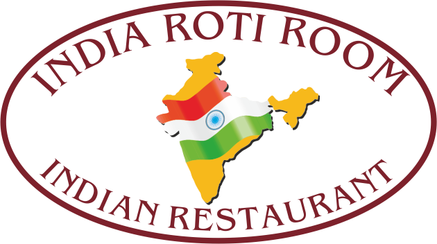
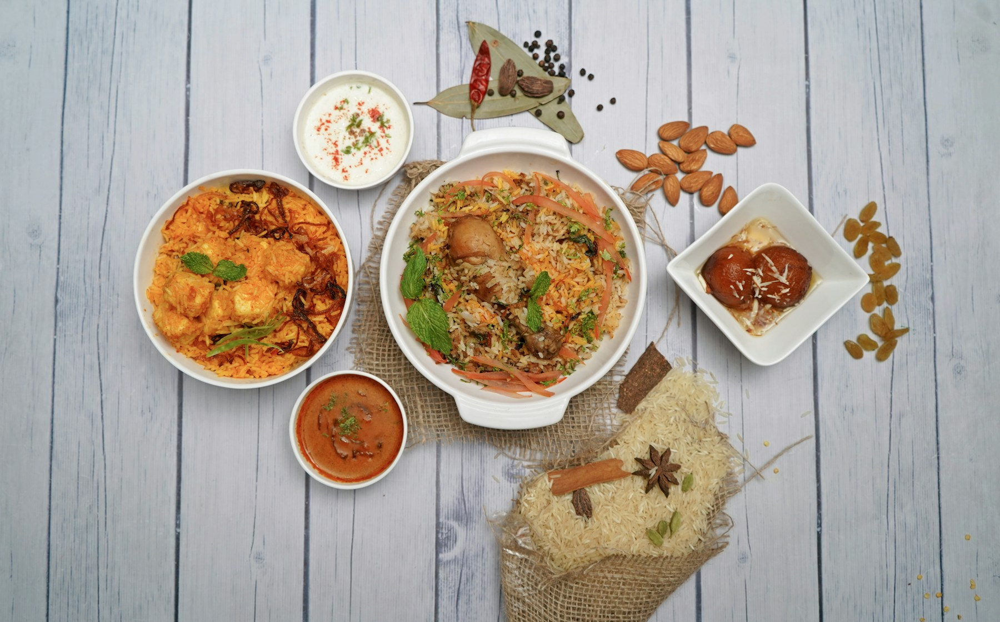

Goa Night
- Voorgerecht
- Mix pakora, onion bhajee, chicken pakora, paneer pakora
- Hoofdgerecht
- Tandoori chicken, lamb jhal frezie, saag paneer, dal makhani, rijst en garlic nan
- Dessert
- Kheer of koffie
€ 130,00 voor 4 personen

Bestel onlineNieuwstraat 15, Enkhuizen
Indiaas restaurant met gerechten uit de tandoor, romige en pittige curries en vers brood uit de kleioven. Aan tafel bij ons, of thuis: we bezorgen in en rond Enkhuizen.
India Roti Room is het enige Indiase restaurant in Enkhuizen. Bij ons geniet u van de gerechten uit de Indiase keuken: van tandoori chicken en butter chicken tot dal makhani, biryani en garlic nan. Liever thuis eten? Dat kan natuurlijk ook. We bezorgen in Enkhuizen en daarbuiten, en u bestelt direct online.
Veel besteld
De nummers zijn onze bestelnummers: handig als u belt om af te halen. Prijzen in euro.
Lentil soup
Gefrituurde uienringen in gekruid kikkererwtenmeel
Pasteitjes gevuld met lichtgekruide aardappels en doperwten
Pasteitjes gevuld met heerlijk gekruid lamsgehakt
Zelfgemaakte Indiase kaas gemarineerd met gekruid beslag en vervolgens gefrituurd
Kipfilet gemarineerd met gekruid beslag en vervolgens gefrituurd
Gegrilde stukjes kipfilet met uien, komkommer en tomaat
In de kleioven gegrilde kippenvleugels gemarineerd in een pittig gekruide saus
Aan de spies gegrild rolletje lamsgehakt gekruid met knoflook, gember, ui en koriander
Knapperig linzenbrood met komijnzaadjes
Zelfgemaakte Indiase kaas, kip en onion bhaji gemarineerd met gekruid beslag en vervolgens gefrituurd
Alle tandoori hoofdgerechten worden geserveerd met Indiase basmati saffraan pulao rijst of nan, en groente.
De bekende Indiase gegrilde rode kip: in de kleioven gegrilde halve kip, gemarineerd in tandoorisaus
Gegrilde stukjes malse kipfilet gemarineerd in een speciale knoflooksaus
Aan de spies gegrild rolletje lamsgehakt gekruid met knoflook, gember, ui en koriander
Gegrilde stukjes malse kipfilet gemarineerd in tandoori saus
Gegrilde stukjes lamsvlees gemarineerd in Indiase kruiden
Gegrilde stukjes malse kipfilet gemarineerd in een speciale mint en koriandersaus
Combinatie van tandoori grills (chicken, king prawn, seekh kebab, lams- en chicken tikka)
Gegrilde grote garnalen gemarineerd in citroensap, tandoori saus, knoflook en koriander
Alle gerechten worden geserveerd met Indiase basmati saffraan pulao rijst of nan.
Gemarineerd in Indiase kruiden, bereid in een romige saus
Gemarineerd in Indiase kruiden, bereid in een romige saus
Bereid met verse tomaat en koriander en rijk aan Indiase specerijen
Bereid met verse tomaat en koriander en rijk aan Indiase specerijen
Bereid met verse tomaat en koriander en rijk aan Indiase specerijen
Bereid met verse tomaat en koriander en rijk aan Indiase specerijen
Kofta = gehakt. Bereid met verse tomaat en koriander en rijk aan Indiase specerijen
Eerst gemarineerd, daarna in de kleioven gegrild en vervolgens klaargemaakt met paprika en Indiase kruiden
Eerst gemarineerd, daarna in de kleioven gegrild en vervolgens klaargemaakt met paprika en Indiase kruiden
Eerst gemarineerd, daarna in de kleioven gegrild en vervolgens klaargemaakt met paprika en Indiase kruiden
Kofta = gehakt. Eerst gemarineerd, daarna in de kleioven gegrild en vervolgens klaargemaakt met paprika en Indiase kruiden
Bereid met een mild gekruide, zachte, romige saus met kokos
Bereid met een mild gekruide, zachte, romige saus met kokos
Bereid met een mild gekruide, zachte, romige saus met kokos
Saag is de Indiase benaming voor spinazie, hier in combinatie met verse tomaat en currysaus
Saag is de Indiase benaming voor spinazie, hier in combinatie met verse tomaat en currysaus
Bereid met een pittige, Indiase currysaus in combinatie met ui, tomaat en paprika
Bereid met een pittige, Indiase currysaus in combinatie met ui, tomaat en paprika
Bereid met een pittige, Indiase currysaus in combinatie met ui, tomaat en paprika
Bereid volgens een uniek recept uit Zuid-India. Een pittig gerecht, op smaak gebracht met citroen en groene pepers
Bereid volgens een uniek recept uit Zuid-India. Een pittig gerecht, op smaak gebracht met citroen en groene pepers
Bereid volgens een uniek recept uit Zuid-India. Een pittig gerecht, op smaak gebracht met citroen en groene pepers
Een hele pittige saus met gemalen Indiase garam masala (een bijzonder mengsel van specerijen), knoflook, gember en tomaat
Een hele pittige saus met gemalen Indiase garam masala (een bijzonder mengsel van specerijen), knoflook, gember en tomaat
Bereid in een mild gekruide saus met cashewnoten, amandelen, rozijnen en ananas
Bereid in een mild gekruide saus met cashewnoten, amandelen, rozijnen en ananas
Bereid in een mild gekruide saus met cashewnoten, amandelen, rozijnen en ananas
Bereid in een mild gekruide saus met linzen, tomaten en citroensap
Bereid in een mild gekruide saus met linzen, tomaten en citroensap
Bereid met verse tomaat en koriander, rijk aan Indiase specerijen en chilisaus
Alle vegetarische hoofdgerechten worden geserveerd met Indiase basmati saffraan pulao rijst of nan.
Een heerlijk Noord-Indiaas recept met goed gekruide kikkererwten
Aardappels en bloemkool bereid met verse Indiase kruiden
Aardappels en paprika bereid met uien en verse Indiase kruiden
Aardappels bereid met uien, yoghurt en verse Indiase kruiden
Zelfgemaakte Indiase kaas en doperwten bereid met verse Indiase kruiden
Zelfgemaakte Indiase kaas bereid in gekruide spinazie, ui, tomaat, gember en knoflook
Aardappels bereid in gekruide spinazie, ui, tomaat, gember en knoflook
Vers gemengde groenten met droge en verse Indiase kruiden
Linzen bereid met roomboter, ui, knoflook, gember en koriander
Verse okra gesauteerd met ui, tomaat, gember en knoflook
Champignons bereid in een gemengde kerriekruidensaus
Geroosterde aubergine met rode ui, tomaat, groene koriander en kruiden
Zelfgemaakte Indiase kaas bereid in rijke roomsaus
Verse groenten bereid in een mild gekruide, zachte, romige saus met kokos
Zelfgemaakte Indiase kaas bereid met verse tomaat en koriander, rijk aan Indiase specerijen en chilisaus
Bijzondere Indiase basmati saffraanrijst als basis.
Heerlijk vers brood uit de Indiase kleioven.
Plat brood bereid met boter
Indiaas bruin brood uit de kleioven
Indiaas brood uit de kleioven
Nan gevuld met lamsgehakt
Nan gevuld met gekruide aardappel en kaas
Nan gevuld met zelfgemaakte Indiase kaas
Nan met boter
Nan met kruiden en knoflook
Nan gevuld met uien
Nan gevuld met amandelen, rozijnen, cashewnoten en suiker
Stukjes komkommer in gekruide yoghurt
Indiase rijstpudding
Indiaas roomijs (zelfgemaakt)
Indiase rijstpudding met Indiaas roomijs
Vanille-ijs
Pistacheroomijs met slagroom
Mokkaroomijs met slagroom
Cocosnootroomijs met slagroom
Mangoroomijs met verse mango, mangolikeur en slagroom
Zwarte thee
Zwarte thee met kruiden
Koffie met extra melk
Koffie met suiker, Indiase zwarte rum, kaneel en slagroom
Koffie met suiker, whisky en slagroom
Koffie met suiker, grand marnier en slagroom
Koffie met suiker, tia maria en slagroom
Koffie met suiker, tia maria, cointreau, kaneel en slagroom
Vier vaste menu's om samen van te genieten: van het Romantic Menu voor twee tot Bombay Night voor zes personen.
€ 130,00 voor 4 personen
€ 170,00 voor 6 personen
vegetarisch
€ 65,00 voor 2 personen
€ 75,00 voor 2 personen
Met een grotere groep lunchen of dineren? Bel 0228 - 321 474 voor de mogelijkheden.

Onze tandoorigerechten worden bereid in een traditionele tandoor: de Indiase kleioven die in veel Indiase en Pakistaanse keukens het hart van de keuken is. In de tandoor wordt gegaard op een zeer hoge temperatuur. Dat geeft de kenmerkende, licht geroosterde smaak.
Uit deze oven komen onder meer de tandoori chicken, de chicken tikka en de lamb tikka, en ook ons brood: tandoori roti en naan, gewoon of gevuld.
Bekijk de tandoorigerechtenBestel online en kies zelf: bezorgen of afhalen. We bezorgen van dinsdag tot en met zondag tot 20:30, in Enkhuizen en daarbuiten. Bezorging is gratis vanaf € 10 en u betaalt veilig met iDEAL.
€ 46,50
€ 42,50
Alleen op de afhaal- en bezorgkaart. Speciaal = extra ei en naanbrood, voor € 2 meer.
Keuze: gewoon of speciaal
Keuze: gewoon of speciaal
Aardappel met spinazie
Indiase kaas met spinazie
Gehaktballetjes
Kipfilet
Lamsvlees met spinazie
Kipfilet met spinazie

De curries, tandoorigerechten, vegetarische gerechten, biryani, brood en bijgerechten van de menukaart kunt u ook afhalen of laten bezorgen. Voorgerechten krijgt u met of zonder saus (rood en mint). Daarnaast:
In de kleioven gegrilde kippenvleugels, gemarineerd in een pittig gekruide saus
Aan de spies gegrild rolletje kipgehakt, gekruid met knoflook, gember, ui en koriander
Gefrituurd gekruid linzendeeg
Surinaams brood gevuld met linzen
Lekker uit eten? Voorkom verrassingen en reserveer vooraf. Vul uw gegevens in, dan nemen wij zo snel mogelijk contact met u op om te bevestigen. Of bel om te informeren naar de mogelijkheden om met een groep te lunchen of te dineren.
Een verjaardag, een zakenlunch, een bijeenkomst, een bruiloft of een andere gelegenheid? In overleg met u verzorgen wij de gewenste hapjes en gerechten. Laat weten wat u van plan bent, of mail naar info@india-rotiroom.nl.
0228 - 321 474
info@india-rotiroom.nl
| Maandag | Gesloten |
|---|---|
| Dinsdag t/m zondag | 16:30 – 21:30 |
| Maandag | Gesloten |
|---|---|
| Dinsdag t/m zondag | 16:30 – 20:30 |